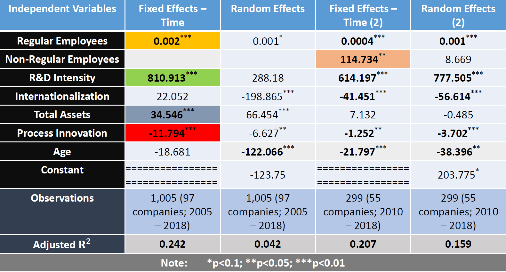

name: title
class: title-slide middle left inverse
background-image: url(“assets/img/Innovation.jpg”)
background-position: bottom right
background-size: 400px
???
Image credit: Unsplash
Does labor flexibility benefit innovation?
–
.pull-left[
* Merits
+ Easier reallocation to more dynamic sectors
+ More incentives to take risks
+ Job matches 🢂 productivity
+ “Fresh blood†inflow]
–
.pull-right[
* Demerits
+ Stronger labor protection 🢂 higher wages and productivity
+ Development of firm-specific skills
+ Trust 🢂 productivity
+ Innovation requires long-term incentives, not short-term punishments (Kleinknecht et al., 2014)]
Focus & Literature gap
–
- Focus on numerical labor flexibility
- “addresses the variation of quantity of labor input†(Arvantis, 2005),
- reflects the ability of firms to use the external labor market to replace regular employees and/or to use temporary employees on fixed-term and part-time contracts, often through temporary employment agencies? (Kato & Zhou, 2018).
–
- Literature gap
- previous studies on this topic have mostly concentrated on European cases. Only Kato & Zhou (2018) have recently conducted the study on Japan’s startup companies
- Kato & Zhou (2018) innovation proxy is a dummy variable (yes/no), mine is the number of applications and citations
Distribution of patent applications across industries

“Electricity†subindustries with most patent applications

“Necessities†subindustries with most patent applications
Companies with highest numbers of patent applications
–
.pull-left[
* Electricity & Communications
+ Panasonic: 15009
+ Toshiba: 14028
+ Mitsubishi Electric: 13219
+ Canon: 13165
+ Toyota Motor: 10150
+ Sharp: 8874
+ Fujitsu: 8075
+ Sony: 7530]
–
.pull-right[
* Necessities (incl. “Games”)
+ Sankyo : 9168
+ Sega Sammy Holdings : 3896
+ Universal Entertainment : 2886
+ Heiwa : 2434
+ Terumo: 2272
+ Fujishoji : 2253
+ Iseki: 1859
+ Unicharm : 1441]
Methodology
–
- (Sub-) Industries analyzed
- Electricity and Communications 🢂 “Semiconductors”
- Necessities 🢂 “Games”
–
- Sources:
- The Institute of Intellectual Property Patent Database (IIP-DB): patent application data. Companies having > 5 applications (Lechevalier et al., 2010)
- Nikkei NEEDS Financial Database: corporate data
–
- Innovation proxy (dependent variable)
- Patent applications: “represent the development of new and technically feasible devices†(Kato & Zhou, 2018) —
quantity aspect
- Patent citations —
quality aspect (Acharya, Baghai et al., 2010)
Possible conceptualization
–
- Visible innovations — overcoming commoditization along established lines. Value results from function.
–
- Invisible innovations (Kusunoki, 2006)
- “Rather than boosting existing dimensions, it paints an entirely new picture of how, why, and to whom a new product or service should appeal†(ibid).
Value ~ function is unclear
- “Once a company succeeds in establishing a new product concept, it is often able to produce powerful loyalty and brand effects that trump dimensional superiority†(ibid).
- Importance of product-customer interaction
–
- Japan is relatively weak in knowledge-based industries. Gaming is as an exception (Aoyama & Izushi, 2003).
–
- Japan’s dual labor market 🢂 possibility of transition from non-regular to regular employment is only 1.7 to 10.3 percent. Gaming industry as an exception (Casper & Storz, 2016).
class: middle center

“Semiconductors†— Correlations
class: middle center

“Games†— Correlations
class: middle center
Variables 🢂 Operationalization
–
Process innovation: Investment / Capital Stock (Brouwer & Kleinknecht, 1997; Sterlacchini, 1998; Fukao, Ikeuchi et al., 2017)
–
Internationalization: Exports / Sales
–
R&D Intensity: R&D / Sales
–
Labor Intensity: Labor Costs / Fixed Assets
“Semiconductors†regression

Tentative conclusions
–
.pull-left[
* Semiconductors
+ Crucial role of R&D for innovation, which is linked to Product Innovation 🢂
+ Negative role of Process Innovation 🢂
+ Regulars (and, possibly, Non-Regulars) play an important role 🢀
+ 🢀 Positive impact of both innovation output (Patents) and innovation input (R&D) on employment
+ Larger and younger companies are more innovative]
–
.pull-right[
* Games
+ Important role of R&D for innovation
+ Crucial role of numerical labor flexibility, measured as Non-regulars' share
+ Investment in fixed assets (🢂 Process Innovation ) — important for services 🢂
+ 🢂 Adjustment of regulars
+ 🢀 Negative impact of innovation output (Patents); positive impact of innovation input (R&D) on employment]
Additional findings
–
- Older manufacturing firms struggle to innovate
–
- Younger manufacturing firms employing non-regulars innovate more
–
- Internationalization is associated with less innovation for manufacturing companies employing non-regulars
class: inverse, center, middle
Thank you for your attention!